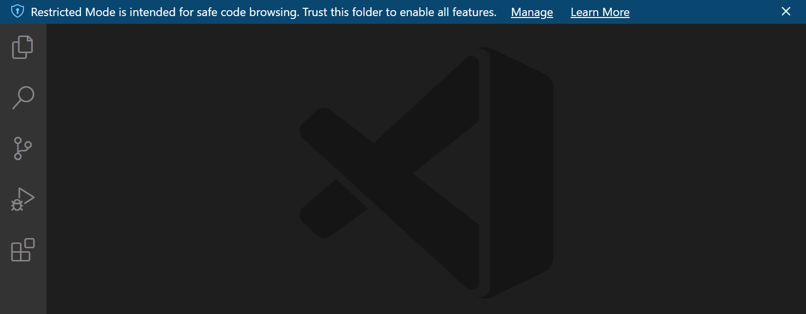
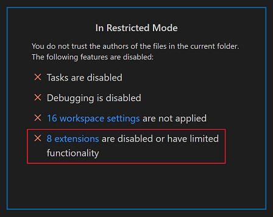

Workspace Trust
Visual Studio Code takes security seriously and wants to help you safely browse and edit code no matter the source or original authors. The Workspace Trust feature lets you decide whether code in your project folder can be executed by VS Code and extensions without your explicit approval.

Note: When in doubt, leave a folder in Restricted Mode. You can always enable trust later.
Safe code browsing
It's great that there is so much source code available on public repositories and file shares. No matter the coding task or problem, there is probably already a good solution available somewhere. It is also great that there are so many powerful coding tools available to help you understand, debug, and optimize your code. However, using open-source code and tools does have risks, and you can leave yourself open to malicious code execution and exploits.
Workspace Trust provides an extra layer of security when working with unfamiliar code, by preventing automatic code execution of any code in your workspace if the workspace is open in "Restricted Mode".
Note: The terms "workspace" and "folder" are used widely in the VS Code UI and documentation. You can think of a "workspace" as a folder with extra metadata created and used by VS Code.
Restricted Mode
When prompted by the Workspace Trust dialog, if you choose No, I don't trust the authors, VS Code will go into Restricted Mode to prevent code execution. The workbench will display a banner at the top with links to Manage your folder via the Workspace Trust editor, and Learn More about Workspace Trust (which takes you to back to this documentation).

You will also see a Restricted Mode badge in the Status bar.

Restricted Mode tries to prevent automatic code execution by disabling or limiting the operation of several VS Code features: tasks, debugging, workspace settings, and extensions.
To see the full list of features disabled in Restricted Mode, you can open the Workspace Trust editor via the Manage link in the banner, or by clicking the Restricted Mode badge in the Status bar.
Note: Workspace Trust can not prevent a malicious extension from executing code and ignoring Restricted Mode. You should only install and run extensions that come from a well-known publisher that you trust.
Tasks
Tasks can run scripts and tool binaries, and because task definitions are defined in the workspace .vscode folder, they are part of the committed source code for a repo, and shared to every user of that repo. Were someone to create a malicious task, it could be unknowningly run by anyone who cloned that repository.
If you try to run or even enumerate tasks (Terminal > Run Task...) while in Restricted Mode, VS Code will display a prompt to trust the folder and continue executing the task. Cancelling the dialog leaves VS Code in Restricted Mode.

Debugging
Similar to running a VS Code task, debug extensions can run debugger binaries when launching a debug session. For that reason, debugging is also disabled when a folder is open in Restricted Mode.
If you try to start a debug session (Run > Start Debugging) while in Restricted Mode, VS Code will display a prompt to trust the folder and continue launching the debugger. Cancelling the dialog leaves VS Code in Restricted Mode, and does not start the debug session.
Workspace settings
Workspace settings are stored in the .vscode folder at the root of your workspace, and are therefore shared by anyone who clones the workspace repository. Some settings contain paths to executables (for example, linter binaries), which if set to point to malicious code, could do damage. For this reason, there is a set of workspace settings that are disabled when running in Restricted Mode.

In the Workspace Trust editor, there is a link to display the workspace settings that aren't being applied. Clicking the link brings up the Settings editor scoped by the @tag:requireTrustedWorkspace tag.

Extensions
The VS Code extensions ecosystem is incredibly rich and diverse. People have created extensions to help with just about any programming task or editor customization. Some extensions provide full programming language support (IntelliSense, debugging, code analysis), and others let you play music or have virtual pets.
Most extensions run code on your behalf and could potentially do harm. Some extensions have settings that could cause them to act maliciously if configured to run an unexpected executable. For this reason, extensions that have not explicitly opted into Workspace Trust are disabled by default in Restricted Mode.

You can review an installed extension's status by clicking the extensions are disabled or have limited functionality link in the Workspace Trust editor, which displays the Extensions view scoped with the @workspaceUnsupported filter.

Disabled in Restricted Mode
Extensions that have either not explicitly indicated that they support running in Restricted Mode are shown in the Disabled in Restricted Mode section. An extension author can also indicate that they never want to be enabled in Restricted Mode if they determine that their extension could be misused by modifications (settings or files) in a workspace.
Limited in Restricted Mode
Extension authors can also evaluate their extensions for possible security vulnerabilities and declare that they have limited support when running in Restricted Mode. This mode means the extension may disable some features or functionality to prevent a possible exploit.
Extensions can add custom text to the Extensions view Workspace Trust badge explaining the limitation when running in an untrusted folder.
For example, the VS Code built-in PHP extension limits the use of the php.validate.executablePath setting to trusted folders since overriding this setting could run a malicious program.

You can override an extension's Workspace Trust support level using the extensions.supportUntrustedWorkspaces setting described in the Enabling extensions section below.
If you try to install an extension in Restricted Mode, you will be prompted to either trust the workspace or just install the extension. If the extension doesn't support Workspace Trust, it will be installed, but be disabled or running with limited functionality.

Note: Extension authors can learn how to update their extensions to support Workspace Trust by reading the Workspace Trust Extension Guide.
Trusting a workspace
If you trust the authors and maintainers of a project, you can trust the project's folder on your local machine. For example, it is usually safe to trust repositories from well-known GitHub organizations such as github.com/microsoft or github.com/docker.
The initial Workspace Trust prompt when you open a new folder allows you to trust that folder and its subfolders.
You can also bring up the Workspace Editor and quickly toggle a folder's trusted state.
There are several ways to bring up the Workspace Editor dialog.
When in Restricted Mode:
- Restricted Mode banner Manage link
- Restricted Mode Status bar item
You can also at any time use:
- Workspaces: Manage Workspace Trust command from the Command Palette (P (Windows, Linux Ctrl+Shift+P))
- Manage Workspace Trust from the Manage gear in the Activity bar

Selecting folders
When you trust a folder, it is added to the Trusted Folders & Workspaces list displayed in the Workspace Trust editor.

You can manually add, edit, and remove folders from this list and the active folder enabling trust is highlighted in bold.
Selecting a parent folder
When you trust a folder via the Workspace Trust editor, you have the option to trust the parent folder. This will apply trust to the parent folder and all subfolders.
This can be helpful if you have many folders with trusted content co-located under one folder.
When opening a subfolder under a trusted parent, you won't see the usual Don't Trust button to put you back in Restricted Mode, instead there is text mentioning that your folder is trusted due to another folder.
You can add, modify, and remove a parent folder entry from the Trusted Folders & Workspaces list.
Folder configurations
As mentioned above, you can trust a parent folder and all subfolders will be trusted. This allows you to control Workspace Trust via a repository's location on disk.
For example, you could put all trusted repos under a "TrustedRepos" parent folder, and unfamiliar repos under another parent folder such as "ForEvaluation". You would trust the "TrustedRepos" folder, and selectively trust folders under "ForEvaluation".
TrustedRepos - Clone trusted repositories under this parent folder
ForEvaluation - Clone experimental or unfamiliar repositories under this parent folder
You also group and set trust on your repositories by grouping them under organization-base parent folders.
github/microsoft - Clone a specific organization's repositories under this parent folder
github/{myforks} - Place your forked repositories under this parent folder
local - Local un-published repositories
Enabling extensions
What happens if you want to use Restricted Mode but your favorite extension doesn't support Workspace Trust? This can happen if an extension, while useful and functional, isn't being actively maintained and hasn't declared their Workspace Trust support. To handle this scenario, you can override the extension's trust state with the extensions.supportUntrustedWorkspaces setting.
Note: Be careful overriding an extension's Workspace Trust support. It may be that the extension author has a good reason for disabling their extension in Restricted Mode. If in doubt, reach out to the extension author or review recent changelogs to get more context.
If you open the Settings editor (, (Windows, Linux Ctrl+,)) and search for "trust extensions", you can find the Extensions: Support Untrusted Workspaces setting, which has an Edit in settings.json link.

Select that link and you will go to your user settings.json file with a new entry for extensions.supportUntrustedWorkspaces. This setting takes an object that has a list of extension IDs and their support status and version. You can select any of your installed extensions via IntelliSense suggestions.
Below you can see a settings.json entry for the Prettier extension.
"extensions.supportUntrustedWorkspaces": {
"esbenp.prettier-vscode": {
"supported": true,
"version": "6.4.0"
},
},
You can either enable or disable Workspace Trust support with the supported attribute. The version attribute specifies the exact extension version applicable and you can remove the version field if you want to set the state for all versions.
If you'd like to learn more about how extension authors evaluate and determine which features to limit in Restricted Mode, you can read the Workspace Trust Extension Guide.
Opening untrusted files
If you open a file that is located outside of a trusted folder, VS Code will detect that the file comes from somewhere outside the folder root and prompt you with the option to continue to open the file or open the file in a new window in Restricted Mode. Opening in Restricted Mode is the safest option and you can always reopen the file in your original VS Code window once you determine the file is trustworthy.

If you would prefer to not be prompted when opening files from outside trusted workspaces, you can set security.workspace.trust.untrustedFiles to open. You can also set security.workspace.trust.untrustedFiles to newWindow to always create a new window in Restricted Mode. Checking the Remember my decision for all workspaces option in the untrusted files dialog applies your choice to the security.workspace.trust.untrustedFiles user setting.
Opening untrusted folders
When working with multi-root workspaces with multiple folders, if you try to add a new folder to a trusted multi-root workspace, you will be prompted to decide if you trust the files in that folder or if not, the entire workspace will switch to Restricted Mode.

Empty windows (no open folder)
By default, if you open a new VS Code window (instance) without opening a folder or workspace, VS Code runs the window with full trust. All installed extensions are enabled and you can use the empty window without restrictions.
When you open a file, you will be prompted whether you want to open an untrusted file since there is no folder to parent it.
You can switch an empty window to Restricted Mode using the Workspace Trust editor (select Manage Workspace Trust from the Manage gear button or the Command Palette) and selecting Don't Trust. The empty window will remain in Restricted Mode for your current session but will go back to trusted if you restart or create a new window.
If you want all empty windows to be in Restricted Mode, you can set security.workspace.trust.emptyWindow to false.
Settings
Below are the available Workspace Trust settings:
security.workspace.trust.enabled- Enable Workspace Trust feature. Default is true.security.workspace.trust.startupPrompt- Whether to show the Workspace Trust dialog on startup. Default is to only show once per distinct folder or workspace.security.workspace.trust.emptyWindow- Whether to always trust an empty window (no open folder). Default is true.security.workspace.trust.untrustedFiles- Controls how to handle loose files in a workspace. Default is to prompt.extensions.supportUntrustedWorkspaces- Override extension Workspace Trust declarations. Either true or false.security.workspace.trust.banner- Controls when the Restricted Mode banner is displayed. Default isuntilDismissed.
Command-line switch
You can disable Workspace Trust via the VS Code command line by passing --disable-workspace-trust. This switch only affects the current session.
Next steps
Learn more at:
- Workspace Trust Extension Guide - Learn how extension authors can support Workspace Trust.
- What is a VS Code "workspace"? - Find out more details about the VS Code "workspace" concept.
- GitHub Repositories extension - Work directly on a repository without cloning the source code to your local machine.
Common questions
Can I still edit my source code in Restricted Mode?
Yes, you can still browse and edit source code in Restricted Mode. Some language features may be disabled, but text editing is always supported.
Where did my installed extensions go?
In Restricted Mode, any extension that doesn't support Workspace Trust will be disabled, and all UI elements such as Activity bar icons and commands will not be displayed.
You can override an extension's Workspace Trust support level with the extensions.supportUntrustedWorkspaces setting but do so with care. Enabling extensions has more details.
Can I disable the Workspace Trust feature?
You can but it is not recommended. If you don't want VS Code to check for Workspace Trust when opening a new folder or repository, you can set security.workspace.trust.enabled to false. VS Code will then behave as it did before the 1.57 release.
How do I untrust a folder/workspace?
Bring up Workspace Trust editor (Workspaces: Manage Workspace Trust from the Command Palette) and select the Don't Trust button. You can also remove the folder from the Trusted Folders & Workspaces list.
Why don't I see the "Don't Trust" button?
If you don't see the Don't Trust button in the Workspace Trust dialog, the folder's trust level may be inherited from a parent folder. Review the Trusted Folders & Workspaces list to check if a parent folder has enabled Workspace Trust.
Some workflows such as connecting to a GitHub Codespace or attaching to a running Docker container are automatically trusted since these are managed environments to which you should already have a high level of trust.
What does Workspace Trust protect against?
Many features of VS Code allow third-party tools and extensions to run automatically, such as linting or format on save, or when you do certain operations like compiling code or debugging. An unethical person could craft an innocent looking project that would run malicious code without your knowledge and harm your local machine. Workspace Trust provides an extra layer of security by trying to prevent code execution while you are evaluating the safety and integrity of unfamiliar source code.